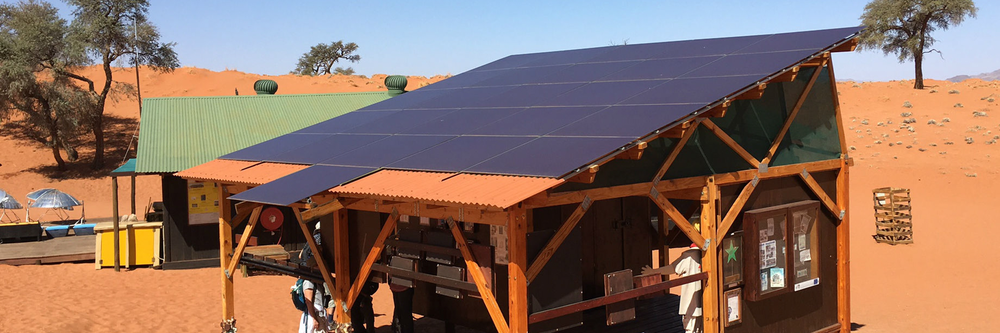

What is frugal innovation?
Frugal innovation is a way of rethinking the way we create
If an optimist sees the opportunity in every difficulty, then the developing world must be filled with optimists. There, people have learned to get more value from limited resources and find creative ways to reuse what they already have. For example, in India, potter Mansukh Prajapati has created a fridge made entirely of clay that uses no electricity and can keep fruits and vegetables fresh for many days — it is, quite literally, a cool invention. In Africa, if your cell phone battery runs low on power, you can often find resourceful entrepreneurs who’ll recharge it with their bicycle. And, in Peru, the area around Lima is extremely humid but also very dry; it receives only one inch of rainfall a year. An engineering college in the city has figured out a way to create water out of air — they’ve designed a giant advertising billboard that absorbs humid air and converts it into purified water, generating more than 90 liters every day.
How to do more with less
If an optimist sees the opportunity in every difficulty, then the developing world must be filled with optimists. There, people have learned to get more value from limited resources and find creative ways to reuse what they already have. For example, in India, potter Mansukh Prajapati has created a fridge made entirely of clay that uses no electricity and can keep fruits and vegetables fresh for many days — it is, quite literally, a cool invention. In Africa, if your cell phone battery runs low on power, you can often find resourceful entrepreneurs who’ll recharge it with their bicycle. And, in Peru, the area around Lima is extremely humid but also very dry; it receives only one inch of rainfall a year. An engineering college in the city has figured out a way to create water out of air — they’ve designed a giant advertising billboard that absorbs humid air and converts it into purified water, generating more than 90 liters every day.If an optimist sees the opportunity in every difficulty, then the developing world must be filled with optimists. There, people have learned to get more value from limited resources and find creative ways to reuse what they already have. For example, in India, potter Mansukh Prajapati has created a fridge made entirely of clay that uses no electricity and can keep fruits and vegetables fresh for many days — it is, quite literally, a cool invention. In Africa, if your cell phone battery runs low on power, you can often find resourceful entrepreneurs who’ll recharge it with their bicycle. And, in Peru, the area around Lima is extremely humid but also very dry; it receives only one inch of rainfall a year. An engineering college in the city has figured out a way to create water out of air — they’ve designed a giant advertising billboard that absorbs humid air and converts it into purified water, generating more than 90 liters every day.If an optimist sees the opportunity in every difficulty, then the developing world must be filled with optimists. There, people have learned to get more value from limited resources and find creative ways to reuse what they already have. For example, in India, potter Mansukh Prajapati has created a fridge made entirely of clay that uses no electricity and can keep fruits and vegetables fresh for many days — it is, quite literally, a cool invention. In Africa, if your cell phone battery runs low on power, you can often find resourceful entrepreneurs who’ll recharge it with their bicycle. And, in Peru, the area around Lima is extremely humid but also very dry; it receives only one inch of rainfall a year. An engineering college in the city has figured out a way to create water out of air — they’ve designed a giant advertising billboard that absorbs humid air and converts it into purified water, generating more than 90 liters every day.
What we can offer
in Peru, the area around Lima is extremely humid but also very dry; it receives only one inch of rainfall a year. An engineering college in the city has figured out a way to create water out of air — they’ve designed a giant advertising billboard that absorbs humid air and converts it into purified water, generating more than 90 liters every day.If an optimist sees the opportunity in every difficulty, then the developing world must be filled with optimists. There, people have learned to get more value from limited resources and find creative ways to reuse what they already have. For example, in India, potter Mansukh Prajapati has created a fridge made entirely of clay that uses no electricity and can keep fruits and vegetables fresh for many days — it is, quite literally, a cool invention. In Africa, if your cell phone battery runs low on power, you can often find resourceful entrepreneurs who’ll recharge it with their bicycle. And, in Peru, the area around Lima is extremely humid but also very dry; it receives only one inch of rainfall a year. An engineering college in the city has figured out a way to create water out of air — they’ve designed a giant advertising billboard that absorbs humid air and converts it into purified water, generating more than 90 liters every day.If an optimist sees the opportunity in every difficulty, then the developing world must be filled with optimists. There, people have learned to get more value from limited resources and find creative ways to reuse what they already have. For example, in India, potter Mansukh Prajapati has created a fridge made entirely of clay that uses no electricity and can keep fruits and vegetables fresh for many days — it is, quite literally, a cool invention. In Africa, if your cell phone battery runs low on power, you can often find resourceful entrepreneurs who’ll recharge it with their bicycle. And, in Peru, the area around Lima is extremely humid but also very dry; it receives only one inch of rainfall a year. An engineering college in the city has figured out a way to create water out of air — they’ve designed a giant advertising billboard that absorbs humid air and converts it into purified water, generating more than 90 liters every day.